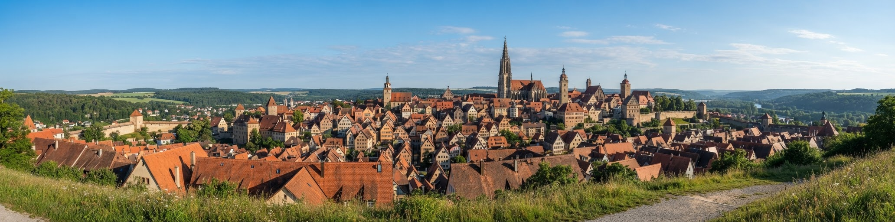

Skip to content
TELO
Ride
Home
Race
Classes
Profile
Echelon EX-5s
connected
1
0 / 400 XP
Maps
Each map opens the next. Race well on the ones you have to unlock the rest.
Prairie Paceline
18.4 km · 90 m climbing · Easy

Old Town Criterium
14.2 km · 140 m climbing · Easy
Cliffside Coast
, locked, your next unlock
32 km · 410 m climbing · Moderate
Finish top 3 vs Bots on Prairie Paceline
Neon Docklands
, locked
21.6 km · 120 m climbing · Moderate
Finish top 3 vs Bots on Old Town Criterium
Dolomites
, locked
38.5 km · 860 m climbing · Hard
Earn 2★ on Cliffside Coast
Vice City
, locked
24 km · 60 m climbing · Moderate
Reach rider level 10
Col du Granit
, locked
16.1 km · 1240 m climbing · Brutal
Earn 3★ on Dolomites
⌂
Map Select
default
new-rider
veteran
unavailable
☀ Light
×